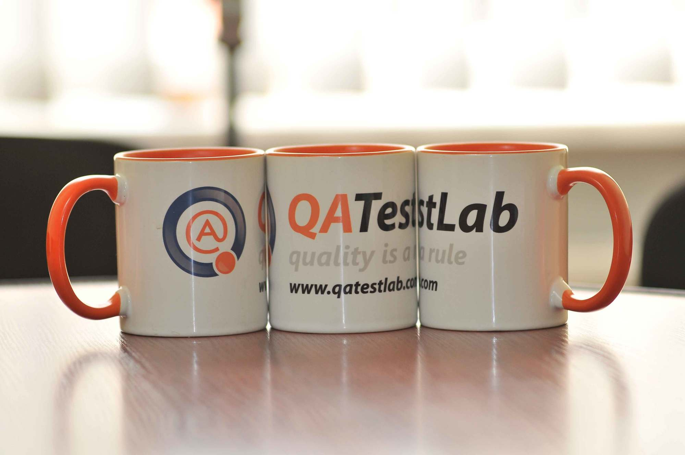

Наші переваги
Ми пропонуємо якісні послуги та рішення для вашого бізнесу.
На сторінці створено:
Структура: header, nav, section, footer. Шрифти: h1, h2, p. Зображення Метатеги для коректного відображення
За допомогою CSS створено колірний дизайн (фон, текст, кнопки), глобальні стилі для body. Оформлення меню. Футер зафіксовано внизу.
